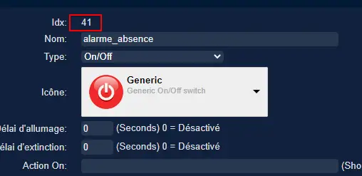

18. Divers
18.1 Debian : Installer un serveur LAMP (Apache MySQL PHP)

https://www.linuxtricks.fr/wiki/debian-installer-un-serveur-lamp-apache-mysql-php
18.2 Installer Paho-mqtt
paho-mqtt est le code source pour la bibliothèque Python MQTT
sudo pip3 install paho-mqtt
18.2.1 Le script pour envoyer des messages (mqtt.py)
#!/usr/bin/env python3.7
# -*- coding: utf-8 -*-
import paho.mqtt.client as mqtt
import json
import sys
# Variables et Arguments
topic= str(sys.argv[1])
etat= str(sys.argv[2])
valeur= str(sys.argv[3])
MQTT_HOST = "192.168.1.42"
MQTT_PORT = 1883
MQTT_KEEPALIVE_INTERVAL = 45
MQTT_TOPIC = topic
MQTT_MSG=json.dumps({etat: valeur});
#
def on_publish(client, userdata, mid):
print ("Message Publié...")
def on_connect(client, userdata, flags, rc):
client.subscribe(MQTT_TOPIC)
client.publish(MQTT_TOPIC, MQTT_MSG)
def on_message(client, userdata, msg):
print(msg.topic)
print(msg.payload)
payload = json.loads(msg.payload) # convertion en json
print(payload['state_l2'])
client.disconnect()
# Initiatlisation MQTT Client
mqttc = mqtt.Client()
# callback function
mqttc.on_publish = on_publish
mqttc.on_connect = on_connect
mqttc.on_message = on_message
# Connection avec le serveur MQTT
mqttc.connect(MQTT_HOST, MQTT_PORT, MQTT_KEEPALIVE_INTERVAL)
# Loop forever
mqttc.loop_forever()
Important
Pour être sûr que le fichier est au bon format (Unix) : utiliser dos2unix , § 8.2.1.1 Problème de lecture de fichier
18.3 Liaison série Domoticz-PI
Scripts dans Domoticz
Ils sont exécutés en dehors du conteneur si Domoticz est sous Docker.
Attention
La passerelle Zigbee 3.0 SonOff utilise le même driver série CP2102 -donc pour /dev/serial/by-id = IDENTIQUE
Note
Modifier si besoin le numéro de la variable et le port de domoticz
Le démarrage automatique est assuré par systemd (voir § 13.6.2.1 Enregistrement des n° de téléphone
Voir aussi
voir http://domo-site.fr/accueil/dossiers/70 *(liaison série)
aldz.py voir § 13.6.2 émission SMS

aldz.bak.dz, en absence de message
Scripts PI
rec_sms_serie.py : https://raw.githubusercontent.com/mgrafr/monitor/main/share/scripts_PI8/rec_sms_serie.py
Important
Utiliser localhost et non 127.0.0.1

start_rec_sms.sh*
[Unit]
Description=start rec sms pour Domoticz
[Service]
Type=simple
ExecStart=/home/michel/start_rec_sms.sh
Restart=on-failure
RestartSec=10
KillMode=process
[Install]
WantedBy=multi-user.target
18.4 Commandes de l’alarme à partir d’un GSM
Pour faciliter l’activation ou l’arrêt de l’alarme
il est facile d’ajouter des codes au script du paragraphe précédent 18.3 Liaison série Domoticz-PI
Extrait de rec_sms_serie.py installé sur le PI qui assure le monitoring , les notifications GSM et les sauvegardes ù .. code-block:
if params[0]=="Alon":
domoticz=ip_domoticz
ip_se=1
params[1]= '41'
params[2]='switch'
params[3]='On'
if params[0]=="Aloff":
domoticz=ip_domoticz
ip_se=1
params[1]= '41'
params[2]='switch'
params[3]='Off'
Note
Alon et Aloff = Marche/Arrêt de l’alarme
Le switch domoticz : 
voir le $ 5.1 Dans Domoticz, les interrupteurs virtuels, les variables
18.5 Données compteur Linky
Configuration après installation du plugin: https://github.com/guillaumezin/DomoticzLinky

Important
Pour la correspondance avec ENEDIS : Ne pas copier toute l’adresse http, s’arrêter après le code


Dans monitor
Voir aussi

Voir aussi
Les modifications dans Domoticz export_sql
pour enregistrer dans la BD SQL, voir § 6.2 Dans Domoticz
Avec DzVent & l’API Domoticz
counter et usage du Device sont restés bloqués au jour ou le plugin s’est arrêté lors d’une mise à jour ENEDIS.j’ai donc utilisé l’API et item.result.json.Counter & item.result.json.Usage.L’utilisation de l’API peut être utilisée lors d’autres occasions.Le port de mon Domoticz est 8086 avec une IP 192.168.X.X mais Domotice est installé sous Docker d’où l’adresse 127.0.0.1:8080.
local function split(s, delimiter)
local result = {}
for match in (s..delimiter):gmatch('(.-)'..delimiter) do
table.insert(result, match)
end
return result
end
--function tointeger( x )
-- num = tonumber( x )
-- return num < 0 and math.ceil( num ) or math.floor( num )
--end
function envoi_fab(don)
local command = "/bin/bash userdata/scripts/bash/./fabric.sh"..don.." > /home/michel/fab.log 2>&1";
os.execute(command);
end
function round(num,numDecimal)
local mult = 10^(numDecimal or 0)
return math.floor(num * mult + 0.5) / mult
end
--
local scriptVar = 'linky_sql'
return {
on = {
timer = {'at 16:12'},
httpResponses = { scriptVar }},
logging = { level = domoticz.LOG_ERROR, marker = scriptVar },
execute = function(dz, item)
if (item.isTimer) then
local url = 'http://127.0.0.1:8080/json.htm?type=command¶m=getdevices&rid=427';
print(url);
dz.openURL({
url = url,
method = 'GET',
callback = scriptVar, })
end
if (item.isHTTPResponse ) then
local results = item.json.result
-- loop through the nodes and print some info
for i, node in pairs(results) do
print('Data'.. node.Data);m=split(node.Data, ';')
local mCounter = m[1] ; print("compteur_kwh:"..mCounter);--mCounter=tointeger(mCounter)/1000;
local mUsage = m[5] ; print("compteur_kw:"..mUsage) ;
libelle="energie#conso"
don=" "..libelle.."#"..tostring(round(tonumber(mCounter)/1000,1)) .."#"..datetime.."#pmax#"..tostring(round(tonumber(mUsage)/1000,1)); print("energie"..don);
envoi_fab(don)
end
end
end
}
Le compteur est ajouté au plan , les données sont disponibles pour monitor : voir § 1.2.1.1 status_variables , devices_zone et device_plan
Table dispositifs : création du dispositif
Voir aussi
Table energie : création de la table
voir un exemple : 17.1.2. Création des tables PH, Redox, temp, …
Fichier json envoyé par domoticz :


18.6 Complément sur l’utilisation des Mots de Passe cryptés dans Domoticz
Une des solutions pour crypter et décrypter les mots de passe
Décodage , Extrait du script maj-services.lua
-- chargement fichier contenant les variables de configuration
package.path = package.path..";www/modules_lua/?.lua"
require 'connect'
local base64 = require'base64'
local user_free = base64.decode(login_free);local passe_free = base64.decode(pass_free);
local sms_free="curl --insecure 'https://smsapi.free-mobile.fr/sendmsg?user="..user_free.."&pass="..passe_free.."&msg=poubelle' >> /home/michel/OsExecute.log 2>&1"
voir ce § 14.6.1.1 connect.lua
18.7 pages sans rapport avec la domotique
18.7.1 Les recettes de cuisines sur la tablette domotique

Important
Comme pour chaque ajout de page , il faut modifier les fichiers :
mes.css.css
config.php
index_loc.php
header.php
et parfois le fichier big-Slide.js , si l’on doit modifier la largeur du menu § 1.7 Ajuster le menu au nombre de pages
le fichier recettes.php https://raw.githubusercontent.com/mgrafr/monitor/main/include/recettes.php

{kind=link}
{kind=link}
{kind=link}
{kind=link}
{kind=link}
{kind=link}
{kind=link}
{kind=link}
{kind=link}
{kind=link}
{kind=link}
{kind=link}
{kind=link}
{kind=link}
{kind=link}
{kind=link}
{kind=link}
{kind=link}
Dans fonctions.php sql_app()

18.8 migration de Domoticz différentes étapes pour ne rien oublier
Exemple migration vers Docker .
faire une suvegarde e la base de bonnées domoticz.db
Modifier les IP/PORT de Domoticz, Zwavejs2mqtt, Zigbee2mqtt,…dans le fichier de configuration de monitor.
Pour les scripts externes non gérés dans le conteneur Domoticz ,installer les versions de python, node, … nécessaires, et les dépendances nécessaires ;par exemple pour la communication série de Domoticz , l’installation de python-periphery , de fabric pour l’export des données,de paho-mqtt pour les topic mqtt,.. , le démarrage auto sur systemd ,…. Si l’API de Domoticz est utilisée dans ces scripts , modifier le Port de Domoticz
{kind=link}
Pour les scripts ajoutès à des dispositifs, modifer le chemin:
{kind=link}
Pour VOIP asterisk, modifier ip de domoticz pour la capture d’image (portier) ; pour appeler json de Domoticz depuis Docker, autoriser dans les paramètres de Domoticz le réseau 172.*.*.*
{kind=link}
Pour le monitoring Nagios, il faut indiquer les IP/PORT qui sont modifiés et les noms des VM Proxmox si Proxmox est utilisé.
Si une nouvelle page doit être ajoutée à monitor, par exemple pour Zwave (OZW n’étant plus maintenu) : créer le sous-domaine pour l’accès distant et le certificat pour HTTPS (Letsencrypt-cerbot)
Les dispositifs sont souvent difficiles à réveiller, s’ils sont réinstallés, modifier l’ID de Domoticz dans la base de données de monitor
Pour les cripts LUA ou DzVent sous Docker le fichier Config s’appelle userdata; les sous répertoires sont attachés à Config et non directement à domoticz .
{kind=link}
Exemple migration vers un conteneur LXC .
Si aucune clés Zwave ou Zigbee ne sont installés sur le conteneur (Zigbee2mqtt et Zwave-JS-UI sont installés dans des conteneurs séparés), l’installation se résume à installer Curl et à lancer la commande bash:
apt install curl
sudo bash -c "$(curl -sSfL https://install.domoticz.com)"
Pour une migration depuis Docker, lire le § précédent et modifier les scripts Lua et DZvent pour revenir à un schéma classique des répertoires.
Installer les modules Python(python-periphery, fabric, paho-mqtt…) , les modules nodejs (lgtv, superagent, …)
{kind=link}
Une sauvegarde suivi d’un backup sur le nouveau serveur et Domoticz sera de nouveau opérationnel.
Si une clé USB est installée, ne pas oublier de la déconnecter d’une machine virtuelle sinon elle n’apparaitra pas avec ls -ln /dev/ttyUSB*
Pour tout changement de serveur.
Ne pas oublier d’exporter les scripts Debian, de les modifier si besoin (sup config pour domoticz auparavant sous docker )exemple:
Systemd:
{kind=link}
{kind=link}
Si un serveur HA BRIDGE est installé, ne pas oublier de changer les IP des dispositifs (changer l’IP su serveur Domoticz ne suffit pas)
{kind=link}
Avertissement
la version 2024.1 ne fonctionne pas sous Debian 12 qui utilise openssl 3.0 (domoticz utilise opebssl 1.1)
18.9 des commandes linux & yaml utiles
18.9.1 Commandes Linux
Le port est déjà utilisé :
lsof -i tcp:<PORT>
kill -9 <PID>
{kind=link}
Pour modifier le fuseau horaire d’un serveur Linux (ex: UTC+2), il suffit d’exécuter la commande suivante :
timedatectl set-timezone Europe/Paris
{kind=link}
Pour publier un message sur Mosquitto:
mosquitto_pub --username NOM --pw MOT_PASSE -t 'TOPIC' -m 'MESSAGE'
{kind=link}
Pour éviter de redémarrer après modification de fstab, …
systemctl daemon-reload
{kind=link}
18.9.2 Commandes yaml
split
divise une chaîne en une liste de chaînes
split(‘caractère de séparation pour créer liste’)[indice dans la liste [0]=1er]
Exemple : binary_sensor.pir_salon –> pir_salon
{{trigger.entity_id.split('.')[1] }}"
18.9.3 Commandes Python
Pour installer un package Python non disponible avec pip et apt
Télécharger le code source , faire un build suivi d’un install:
exemple pour Python-mysql-connector
# télécharger la source ,ici sur le site de mysql :https://dev.mysql.com/downloads/connector/python/
wget https://cdn.mysql.com//Downloads/Connector-Python/mysql-connector-python-9.1.0-src.tar.gz
gzip mysql-connector-python-9.1.0-src.tar.gz -d
tar -x -f mysql-connector-python-9.1.0-src.tar
cd mysql-connector-python-9.1.0-src
cd mysql-connector-python
python3 setup.py build
python3 setup.py install
{kind=link}
{kind=link}
18.10 Serveur SSE installé dans Monitor
pour communiquer entre les diverses applications (Domoticz, Home Assistant, les Clients et le serveur Web) nous utiliserons la base de données SQL; nous créons une nouvelle table avec un enregistrement:
{kind=link}
18.10.1 Le serveur SSE PHP
fichier serveur_sse.php
header('Connection: keep-alive');
header("Access-Control-Allow-Origin: *");
require_once('../fonctions.php');
ignore_user_abort(true); // Empêche PHP de vérifier la déconnexion de l'utilisateur
connection_aborted(); // Vérifie si l'utilisateur s'est déconnecté ou non
// en cas de reconnexion du client, il enverra Last_Event_ID dans les en-têtes
// ceci n'est évalué que lors de la première requête et de la reconnexion ultérieure du client
$lastEventId = floatval(isset($_SERVER["HTTP_LAST_EVENT_ID"]) ? $_SERVER["HTTP_LAST_EVENT_ID"] : 0);
if ($lastEventId == 0) {
$lastEventId = floatval(isset($_GET["lastEventId"]) ? $_GET["lastEventId"] : false);
}
// conserve également notre propre dernier identifiant pour les mises à jour normales mais favorise last_event_id s'il existe
// puisqu'à chaque reconnexion, cette valeur sera perdue
// Get the current time on server
date_default_timezone_set('Europe/Paris');
$currentTime = date("H:i:s", time());
$event= 'message';
if(connection_aborted()){
exit();}
// importation des données si il en existent de nouvelles
$donnees=[
'command'=> '5',
'id' => "",
'state' => "",
'date' => $currentTime
];
$retour=mysql_app($donnees);
$d = array("heure"=>$currentTime, "id"=>$retour['id'], "state"=>$retour['state']);
$id=$retour['id'];
if($id !="" ){
echo "event: " . $event . "\n";
echo "data: ".json_encode($d)." \n\n";
ob_flush();
flush();
$donnees1=[
'command'=> '6',
'id' => "",
'state' => ""
];mysql_app($donnees1);
}
else
sleep(SSE_SLEEP);
?>
{kind=link}
Le client reçoit:
{kind=link}
18.10.2 L’API de monitor
18.10.2.1 Mise à jour des dispositifs
http://192.168.1.9/monitor/api/json.php?app=maj&id=xxx&state=XX
la fonction maj() dans /api/f_pour_api.php
function maj($id,$state){
$donnees=array();
$donnees=[
'command'=> '4',
'id' => $id,
'state' => $state,
'date' => date("H:i:s", time())
];
mysql_app($donnees);
return 'OK';
}
la fonction mysql_app() dans /fonctions.php
{kind=link}
18.10.2.2 Envoi de notifications par SMS
http://192.168.1.9/monitor/api/json.php?app=envoi_sms&contenu=xxxxxxxxxxxxxxx
la fonction sms() dans /api/f_pour_api.php
function sms($contenu){
$file="/www/monitor/python/aldz.py";
$content="#!/usr/bin/env python3 -*- coding: utf-8 -*-
x='".$contenu."'
priority=0";
file_put_contents($file,$content);
return "envoi_sms:";
{kind=link}
le richier sms_mo.py : https://raw.githubusercontent.com/mgrafr/monitor/refs/heads/main/share/python/sms_mo.py
le fichier sms_mo.service , pour un démarrage automatique:
https://raw.githubusercontent.com/mgrafr/monitor/refs/heads/main/share/python/sms_mo.service
18.10.3 L’API de monitor depuis HA ou DZ
18.10.3.1 depuis Domoticz
package.path = package.path..";www/modules_lua/?.lua"
require 'connect' -- fichier contenant l'IP de monitor
function send_sse(txt,txt1)
local api_mon="curl --insecure 'http://'..ip_monitor..'/monitor/api/json.php?app=maj&id="..txt.."&state="..txt1.."' > sse.log 2>&1"
os.execute(api_mon)
end
{kind=link}
18.10.3.2 depuis Home Assistant
Dans configuration yaml, la rest_command
rest_command:
monitor_2:
url: "http://192.168.1.9/monitor/api/json.php?app=maj&id={{id}}&state={{value}}"
Dans automations.yaml,
action:
- service: rest_command.monitor_1
data:
value: "{{ trigger.to_state.state }}"
id: "{{ trigger.entity_id }} "
18.12 Glossaire
Points de données ou data points
Ce sont des chaînes uniques de données envoyée par un dispositif, un compteur ou un capteur installé dans une maison.
18.11 Comment générer des clés SSH
18.11.1 Générer une clé SSH
2 algorithmes sont utilisés pour générer des clés d’authentification :
RSA – Une clé RSA SSH est considérée comme hautement sécurisée de 2048 ou 4096 bits. Compatible avec les anciens systèmes d’exploitation.
Ed25519 – plus moderne avec une taille de clé standard plus petite de 256 bits. Aussi sûr et efficace qu’une clé RSA en raison de ses propriétés cryptographiques.
Avec la console :
Le fichier de clé publique doit avoir une extension PUB.
Les clés privées RSA se terminent RSA . Le fichier pour Ed25519 n’a pas d’extension
18.11.2 Vérifier que openssh-client est installé sur l’IP distante
18.11.3 Transfert de la clé publique SSH vers un serveur distant